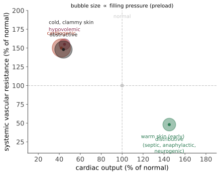

本页目录
病理 III · 血流动力学障碍与休克
这一页讲"血待在不该待的地方"或"血到不了该到的地方"：水肿、充血淤血、出血、血栓、栓塞、梗死、休克。它们构成了发达国家死亡原因的大半（心梗、卒中、肺栓塞都在这一页里）。
1. 水肿：Starling 力的四种失衡
回到第 03 页的公式 \(J_v = K_f[(P_c - P_i) - \sigma(\pi_c - \pi_i)]\)，四种机制一一对应：
| 机制 | 变量 | 临床例 | 液体性质 |
|---|---|---|---|
| 静水压升高 | \(P_c\) ↑ | 心衰（全身）、门脉高压（腹水）、深静脉血栓（单肢） | 漏出液 |
| 胶体渗透压降低 | \(\pi_c\) ↓ | 肾病综合征（丢蛋白）、肝硬化（不合成）、蛋白丢失性肠病、恶病质 | 漏出液 |
| 通透性升高 | \(K_f\)、\(\sigma\) ↑ | 炎症、烧伤、ARDS、过敏 | 渗出液 |
| 淋巴回流受阻 | \(P_i\) ↑ | 术后/放疗后淋巴水肿、丝虫病（象皮肿）、肿瘤浸润（乳腺癌的"橘皮征"） | 富蛋白 |
钠水潴留是几乎所有全身性水肿的放大器：有效循环容量下降 → RAAS 与 ADH 激活 → 保钠保水 → 静水压进一步升高（又一个正反馈）。这解释了为什么心衰与肝硬化的治疗核心是限钠 + 利尿而不是"补蛋白"。
凹陷性 vs 非凹陷性：前者为低蛋白/静水压性（水可推开），后者多见于淋巴水肿与黏液性水肿（甲减时的糖胺聚糖沉积）。
2. 充血与淤血
充血 hyperemia 是主动的（小动脉扩张，如运动、炎症）——组织呈鲜红（氧合血）；淤血 congestion 是被动的（静脉回流受阻）——暗红/发绀，常伴水肿。
慢性淤血的两个经典形态：槟榔肝（慢性右心衰 → 肝小叶中央区淤血坏死 + 周边脂肪变，切面斑驳）与肺褐色硬化（慢性左心衰 → 肺泡内心衰细胞 = 含铁血黄素巨噬细胞 + 间隔纤维化）。
3. 止血与血栓：同一套机制，两个后果
正常止血三步：① 血管收缩（内皮素）；② 初级止血——血小板黏附（vWF 桥接 GPIb 与暴露的胶原）→ 活化 → 释放（ADP、TXA₂）→ 聚集（GPIIb/IIIa 结合纤维蛋白原）；③ 次级止血——组织因子启动凝血级联 → 凝血酶 → 纤维蛋白网。
药物靶点对照（第 15 页展开）：阿司匹林 → COX-1/TXA₂；氯吡格雷/替格瑞洛 → P2Y12（ADP 受体）；替罗非班 → GPIIb/IIIa；肝素 → 增强抗凝血酶（灭活 IIa、Xa）；华法林 → 维生素 K 环氧化物还原酶（II、VII、IX、X 与蛋白 C/S）；DOAC → 直接抑制 Xa（利伐沙班等） 或 IIa（达比加群）。
内皮的抗栓功能（正常时主动抗凝，值得单列）：PGI₂ 与 NO（抑制血小板）、血栓调节蛋白 → 激活蛋白 C、硫酸乙酰肝素 → 激活抗凝血酶、组织型纤溶酶原激活物 tPA。内皮损伤 = 同时失去抗栓面并暴露促栓面——这是动脉血栓的起点。
Virchow 三要素（临床上每天都在用的分类）
| 要素 | 内容 | 典型情境 |
|---|---|---|
| 内皮损伤 | 斑块破裂、血管炎、导管、吸烟、高同型半胱氨酸 | 动脉血栓的主因 |
| 血流异常 | 淤滞（制动、房颤、静脉曲张、心衰）或湍流（分叉、动脉瘤、狭窄） | 静脉血栓的主因 |
| 高凝状态 | 遗传：因子 V Leiden（最常见，对活化蛋白 C 抵抗）、凝血酶原 G20210A、蛋白 C/S 与抗凝血酶缺乏；获得性：恶性肿瘤、妊娠、口服避孕药、术后、抗磷脂抗体综合征、肝素诱导性血小板减少 HIT | 两者皆可 |
动脉血栓 vs 静脉血栓的实际差别（决定用什么药）：动脉血栓形成于高剪切、以血小板为主（白色血栓） → 抗血小板药；静脉血栓形成于淤滞、以纤维蛋白与红细胞为主（红色血栓） → 抗凝药。"心梗用阿司匹林、深静脉血栓用抗凝"不是习惯，是病理决定的。
血栓结局：溶解、机化再通、扩展、脱落成栓子。慢性静脉血栓机化后遗留瓣膜破坏 → 血栓后综合征。
4. 弥散性血管内凝血（DIC）
本质：全身性凝血激活 → 微血栓广泛形成 → 消耗凝血因子与血小板 → 同时出血与血栓。
病因：脓毒症（最常见）、产科灾难（羊水栓塞、胎盘早剥）、大面积创伤/烧伤、恶性肿瘤（尤其急性早幼粒细胞白血病）、蛇毒、严重输血反应。
实验室表现：血小板 ↓、PT 与 APTT 延长、纤维蛋白原 ↓、D-二聚体显著升高、外周血见破碎红细胞（微血管病性溶血）。治疗核心是治原发病——这一条常被忽略。
5. 栓塞：五类栓子
| 栓子 | 来源 | 典型后果 |
|---|---|---|
| 血栓栓子（99%） | 下肢深静脉 → 肺栓塞；左心/房颤/斑块 → 体循环栓塞（脑、肾、脾、下肢） | 见下 |
| 脂肪栓子 | 长骨骨折、骨科手术 | 1–3 天后：呼吸困难 + 神经症状 + 瘀点三联 |
| 气体栓子 | 减压病、手术/穿刺 | 需约 100 mL 才致命；减压病的"弯腰症"与骨坏死 |
| 羊水栓子 | 分娩 | 死亡率极高，常合并 DIC |
| 肿瘤/异物/感染性 | 脓毒性栓塞（心内膜炎） |
肺栓塞的病理生理：死腔通气增加（V/Q → ∞）→ 低氧 + 过度通气致 PaCO₂ 降低；大面积栓塞 → 右室后负荷骤增 → 急性右心衰与休克。因肺有双重供血（肺动脉 + 支气管动脉），仅约 10% 的肺栓塞造成肺梗死，且多见于原本已有心肺疾病者。
矛盾性栓塞（paradoxical embolism）：静脉栓子经卵圆孔未闭进入体循环——是年轻人不明原因卒中的鉴别项。
6. 梗死：哪些器官会梗死
两型：贫血性（白色）梗死——终动脉供血的实质器官（心、肾、脾）；出血性（红色）梗死——双重供血或疏松组织或静脉阻塞（肺、肠、睾丸扭转）。
影响梗死是否发生与范围的因素：① 侧支供应（第 01 页规律三）；② 闭塞速度（缓慢闭塞给侧支时间开放——所以慢性稳定型心绞痛患者的斑块完全闭塞有时反而症状轻）；③ 组织对缺氧的耐受（神经元 3–5 分钟，心肌 20–30 分钟，骨骼肌数小时，成纤维细胞更久）；④ 血氧含量（贫血、低氧使阈值提前）。
心肌梗死的形态时间线（对上临床窗口）：0–4 h 无光镜改变（但可逆窗口已在流逝）→ 4–12 h 凝固性坏死开始、波浪状纤维 → 12–24 h 收缩带坏死、核固缩 → 1–3 天中性粒细胞浸润（此期心脏破裂风险最高的前奏）→ 3–7 天巨噬细胞清除（壁最薄弱、游离壁破裂高峰）→ 1–2 周肉芽组织 → 2 月余成熟瘢痕。
这条时间线直接解释了心梗并发症的时间分布：早期心律失常（分钟–小时）、乳头肌断裂与游离壁破裂（3–7 天）、室壁瘤与附壁血栓（数周后）、Dressler 综合征（数周，免疫性心包炎）。
7. 休克：四型与它们的血流动力学签名
定义：循环衰竭导致组织灌注不足与细胞缺氧——注意低血压不是定义（早期可代偿性维持血压，尤其年轻人与孕妇）。

| 型 | 机制 | CO | SVR | 充盈压 | 皮肤 |
|---|---|---|---|---|---|
| 低容量性 | 血/液体丢失 | ↓ | ↑ | ↓ | 湿冷 |
| 心源性 | 泵衰竭（大面积心梗、心律失常） | ↓ | ↑ | ↑ | 湿冷 |
| 梗阻性 | 心脏压塞、张力性气胸、大面积肺栓塞 | ↓ | ↑ | ↑（右侧） | 湿冷 |
| 分布性 | 脓毒症、过敏、神经源性 | ↑或正常 | ↓↓ | ↓ | 温暖（早期） |
"暖休克 vs 冷休克"这条床边判断，就是上表的直接读出。
休克的三期：① 代偿期（压力感受器反射、RAAS、ADH → 心率↑、缩血管、保水；血压尚可）；② 进展期（组织低灌注 → 无氧代谢 → 乳酸酸中毒 → 小动脉对儿茶酚胺反应下降、血液淤滞、毛细血管渗漏）；③ 不可逆期（细胞坏死、溶酶体酶释放、心肌抑制、肠道屏障失效致细菌移位 → 多器官功能障碍）。
乳酸是床边最有用的组织灌注标志：乳酸清除率而非单次值更能反映复苏是否有效（🔗 从症状到决策站第 13 页讲脓毒症集束治疗的证据）。
脓毒症为何特殊：不只是感染 + 低血压，而是失调的宿主反应——血管麻痹（iNOS/NO）、内皮糖萼脱落 → 弥漫渗漏、微循环分流（大血管流量正常而毛细血管仍缺氧）、线粒体功能障碍（细胞病性缺氧）。这解释了为什么单纯把血压升上去并不足以救活患者。
参考与更新
- 最后审查：2026-08-02。 本节来源用于核验水肿、血栓/栓塞与休克的机制；实际诊断、抗凝和复苏策略需按当地指南与患者风险分层执行。
- Thrombosis — NLM/NIH Bookshelf：血栓形成、Virchow 三要素与栓塞鉴别。
- Shock — NLM/NIH Bookshelf：循环衰竭、休克类型与组织低灌注。
- Sepsis fact sheet — WHO，2024：感染相关器官功能障碍和脓毒性休克背景。
下一页：肿瘤——从单个突变细胞到全身转移，本站篇幅最长的一个总论主题。